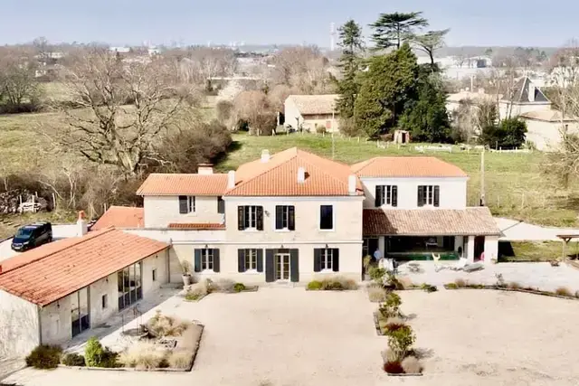
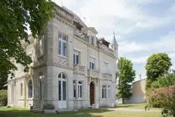
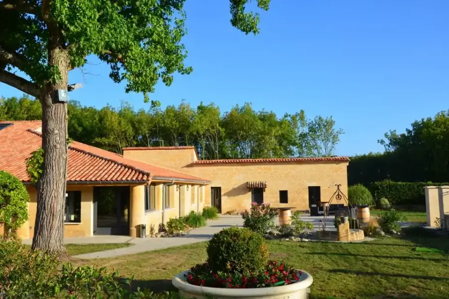
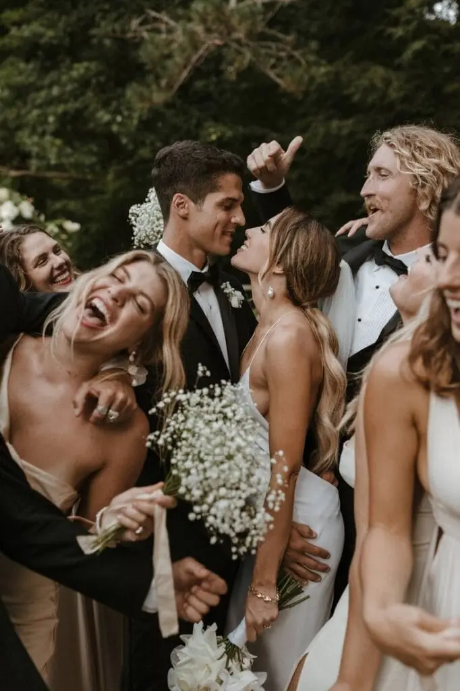

In 2027, a new trend is emerging in the wedding world: small, intimate weddings. These celebrations, often with fewer than 50 guests, are growing in popularity for their simplicity, authenticity and personalisation.
Why choose an intimate wedding?
Small weddings offer an alternative to large traditional celebrations. They let couples focus on what matters: their love and their commitment. With fewer guests, every moment becomes more meaningful and every detail can be carefully planned.
The advantages of small weddings
- Intimacy and authenticity: sharing this special moment with your closest and dearest creates a warm, authentic atmosphere.
- Personalisation: with fewer guests, couples can invest in personalised details, such as unique gifts for each guest or bespoke menus.
- A controlled budget: reducing the number of guests frees up budget for important elements such as photography, decor or even the honeymoon.
- Flexibility: intimate weddings offer more flexibility in terms of venue and date. Couples can choose unique, intimate places, such as a family garden or a small chapel.
Intimate wedding trends in 2027
In 2027, intimate weddings stand out for their creativity and originality. Here are a few trends to watch:
- Outdoor ceremonies: gardens, beaches and forests are becoming favourite settings for intimate weddings, offering a natural, enchanting backdrop.
- Eco-friendly decor: couples are opting for sustainable, environmentally friendly decorations, such as local flowers and recycled materials.
- Culinary experiences: personalised menus and unique culinary experiences, such as wine tastings or meals prepared by renowned chefs, are very popular.
- Technology and streaming: to include loved ones who can't be there, couples use technology to broadcast their ceremony live.
Planning an intimate wedding
Planning an intimate wedding requires close attention to detail. Here are a few key steps to help you organise your special day:
- Set the budget: establish a realistic budget taking into account the costs of the ceremony, reception, decor and other expenses.
- Choose the venue: select a venue in the Bordeaux region that matches your vision and style. Gardens, beaches, small chapels and even family homes are popular options.
- Create a guest list: limit your guest list to the people who matter most to you. This will make your wedding more intimate and meaningful.
- Personalise the details: invest in personalised elements, such as handmade invitations, guest gifts and unique decorations.
- Hire suppliers: choose trusted suppliers for photography, music, catering and decor. Make sure they understand your vision and expectations.
- Plan activities: plan activities for your guests, such as games, speeches or musical performances, to make the day even more memorable.
Inspiration for an intimate wedding
Here are a few ideas to make your intimate wedding unique and unforgettable:
- Themed decor: choose a theme that reflects your personality and interests, such as a bohemian, vintage or rustic wedding.
- An intimate meal: opt for an outdoor meal with long tables and fairy lights to create a warm atmosphere.
- Artistic photography: hire a photographer who specialises in intimate weddings to capture authentic, moving moments.
- Personalised gifts: give your guests unique, personalised gifts, such as jars of homemade honey, artisan candles or potted plants.
Venues for an intimate wedding
The Bordeaux region offers a range of reception venues for your intimate wedding. Here are a few suggestions:
Domaine de la Rose Blanche, Floirac

A former wine estate converted into a reception venue. Just 15 minutes from Bordeaux, this estate offers a privileged country setting for memorable events. With its private lounges, elegant reception room and extensive landscaped gardens, it is perfect for exceptional moments.
Château des Tours, Le Bouscat

An elegant historic estate surrounded by a large wooded garden. This chic, peaceful setting is ideal for memorable events, offering a refined, romantic atmosphere.
Domaine de Conseillant, Cubzac-les-Ponts

An enchanting venue set in 11 hectares of greenery. Once owned by the Cousteau family, this historic estate has been fully restored and offers a calm, discreet setting, ideal for memorable events.
A couple's testimonial
Marie and Julien, who married in June 2027, share their experience: "We wanted a wedding that reflected us, without the stress of a big reception. Our intimate wedding was perfect, surrounded by our closest family and friends. Every moment was magical and unforgettable."
Marie & Julien
The challenges of intimate weddings
Although intimate weddings have many advantages, they are not without challenges. Here are a few aspects to consider:
- Managing expectations: with a limited number of guests, it can be difficult to manage the expectations of friends and family who aren't invited. It is important to communicate your choices clearly and explain that you want an intimate ceremony.
- Logistics: even with a small number of guests, planning an intimate wedding requires careful organisation. Make sure you coordinate every aspect of the day well to avoid surprises.
- Choosing the venue: finding the perfect venue for an intimate wedding can be a challenge, especially if you are looking for a unique, intimate place near Bordeaux. Take the time to visit several venues and talk to the owners to make sure they meet your needs.
- Personalisation: although personalisation is an advantage, it can also be a challenge. Finding unique, creative ideas to make your wedding special takes time and effort.
Tips for a successful intimate wedding
To help you overcome these challenges and make your intimate wedding a success, here are a few practical tips:
- Communicate openly: talk to your loved ones about your choices and explain why you have opted for an intimate wedding. Transparency can help avoid misunderstandings and disappointment.
- Plan ahead: start planning your wedding well in advance to make sure every detail is taken care of. This will let you handle the unexpected and fully enjoy your day.
- Be flexible: be ready to adapt to changes and the unexpected. Flexibility is essential for fully enjoying your wedding without stress.
- Involve your guests: get your guests involved in planning and creating your wedding. This can strengthen bonds and make the day even more special.
- Enjoy every moment: finally, don't forget to enjoy every moment of your special day. Intimate weddings are a chance to create precious, lasting memories.

My view as a professional
Alexandra Ambert, wedding planner and designer at Lovely Day Event, gives her professional view: "Small weddings allow for in-depth personalisation and a warm atmosphere. Couples can really focus on the details that matter to them, and every guest feels special. It is a trend that I think will keep growing in popularity in the Bordeaux region."
Alexandra Ambert
In short…
Small weddings in 2027 are a new way to celebrate love, with the emphasis on intimacy, personalisation and authenticity. Our ceremonies let you refocus on what matters and create unforgettable memories in a warm, authentic atmosphere. Whether outdoors, in a minimalist setting or with a touch of creativity, our intimate weddings offer a wealth of possibilities for a unique, personal celebration.
Now let yourself be won over by this new way of saying "I do" and celebrating love in the most beautiful and personal way possible.
Lovely Day Event offers several services
Wedding planning
I step in at every stage of your preparations and guide you through your choices, bringing ideas and suggestions so that your wedding looks like no one but you.
On-the-day coordination
I will be the conductor of your day, managing the suppliers, the set-up of your decor and the smooth running of this beautiful day.
Wedding design
Creative and passionate, I am a certified Wedding Designer and I create a scenographic atmosphere that matches the theme of your wedding. Styling is included in Signature, or offered as an add-on to on-the-day coordination.